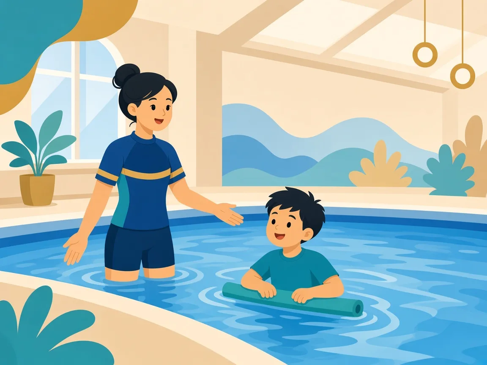

為什麼許多家庭選擇游泳？
水的浮力可減少關節負重，有助在較安全的環境練習平衡與全身協調。對肌張力較低（hypotonia）的孩子，游泳能以遊戲化方式強化核心與四肢控制，同時提供明確的社交與規律活動。

浮力與遊戲化練習，幫助建立力量與協調
健康與安全：請先與醫生溝通的重點
- 頸椎穩定性：部分唐氏綜合症人士需注意寰樞椎不穩；若醫生有活動限制，請務必提前告知教練，課堂會避免過度屈伸頸部的動作。
- 心臟或其他內科狀況：按醫生建議調整強度與休息頻率。
- 呼吸與耳鼻喉：練習時留意疲勞、咳嗽或耳部不適，必要時暫停並離水休息。
以上為常見教學提醒，個別醫療決定以醫生意見為準。
課堂節奏
- 熱身由陸地或淺水開始，動作幅度由小至大。
- 多用示範與手牽引導；指令短、具體、可重複。
- 每完成小步驟（例如願意坐池邊踢水）即給予清楚讚賞。
- 社交動機強的孩子，可適度加入與教練的互動遊戲，但始終以安全距離與規則為先。
家長在家可以做什麼？
- 浴缸玩水：用杯子倒水、吹泡泡，建立對臉部濕水的正面經驗。
- 保持「游泳日」常規：同一天、同一準備流程，減少不安。
- 與教練分享醫生最新建議及孩子當日身體狀況。
溫馨提示：本頁為家長教育整理，供認識特殊需要與游泳教學方向參考，並非醫療診斷或治療建議。孩子個別安排請 WhatsApp 與教練商討。
家長常見問題
一定要有醫生證明才能上課嗎？
若孩子有已知的頸椎、心臟或其他限制，我們強烈建議先咨詢醫生，並把注意事項告訴教練。一般健康狀況亦可先 WhatsApp 說明，我們會評估是否適合試堂。
進度會不會很慢？
每位孩子不同。我們重視「穩定出席＋享受水中」多於短期泳姿完美。小步進展累積起來，往往比催促更持久。
延伸閱讀：智力及多重障礙 · 肢體・視覺・聽力 · 總覽